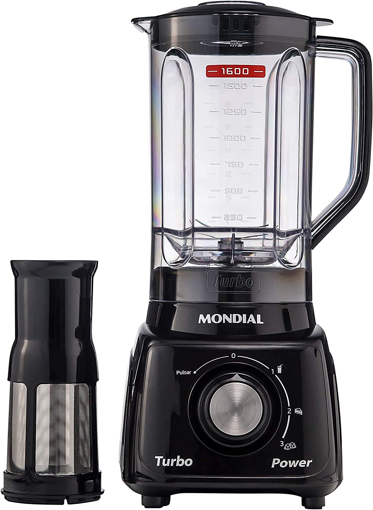

Liquidificador Mondial, Turbo Power 550W, 110V, Preto, 1,6L - L-99 FB
Sobre este item
- 550W de potência:Melhor desempenho nas receitas do dia a dia como sucos , vitaminas, bolo , sopas, tortas e patês
- COPO DE 2,2L ULTRARRESISTENTE :Copo resistente a quedas e riscos, e não pega cheiro Prepara grandes quantidades de sucos, vitaminas e receitas
- 3 velocidades + pulsar:A função “pulsar” do liquidificador l-99 é velocidade máxima - mistura de forma rápida alimentos pastosos como grão de bico, papinhas de bebê, cremes e Smoothies
- Função auto limpeza:Auxilia na limpeza do copo do liquidificador e, em especial, as suas lâminas Para isso, encha o copo até metade com água e um pouquinho de detergente Depois, aperte o botão pulsar alguns vezes e pronto!